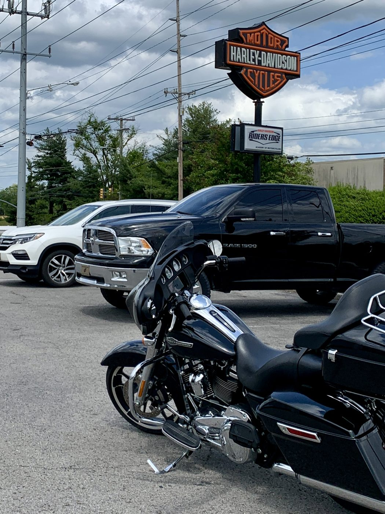
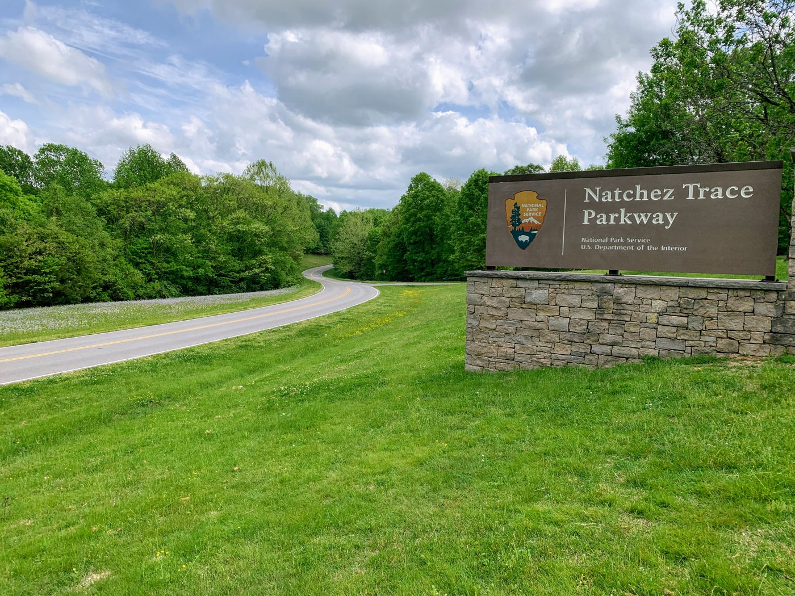
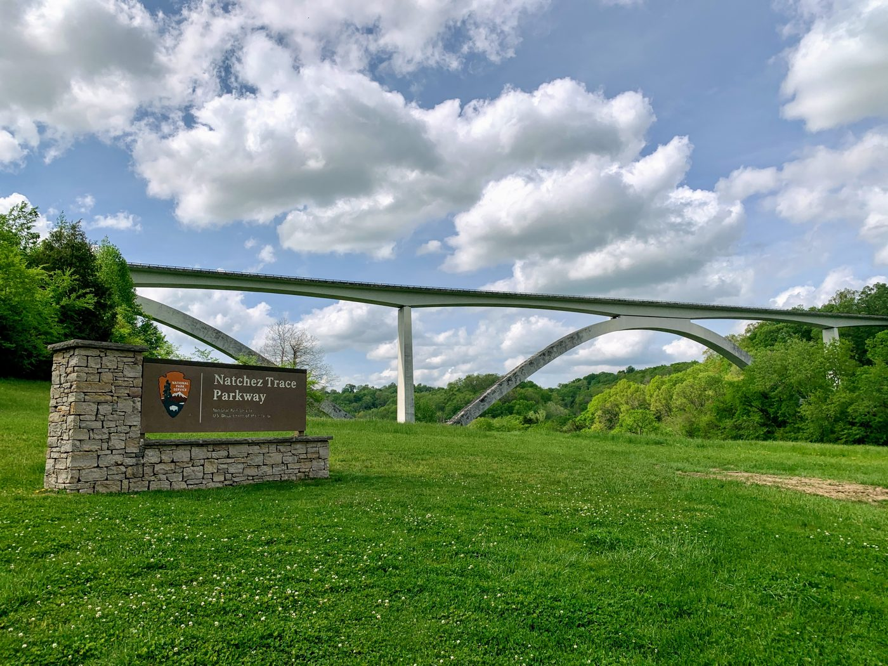
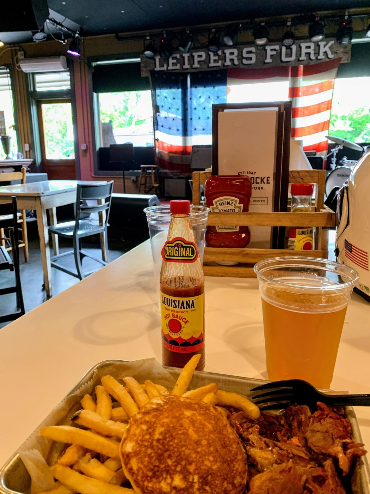
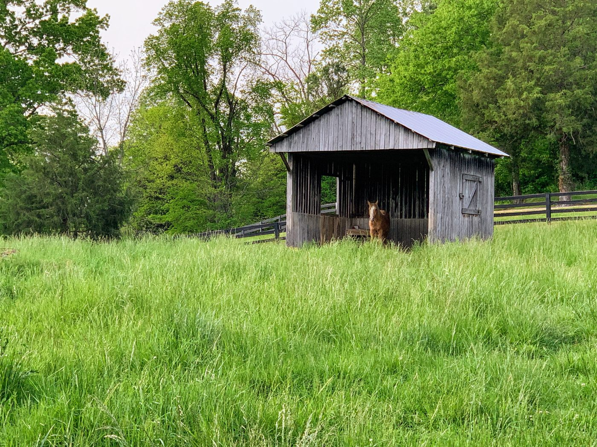
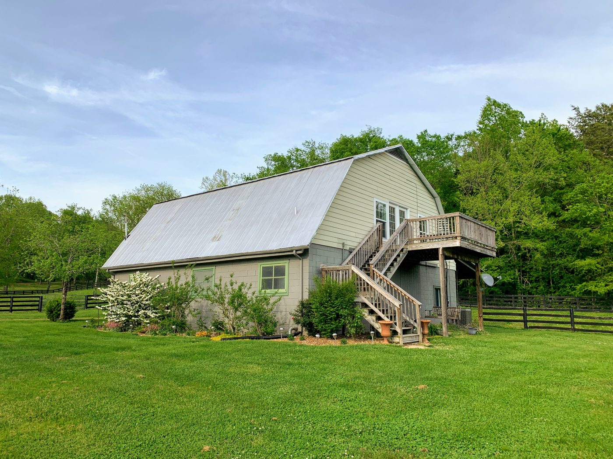
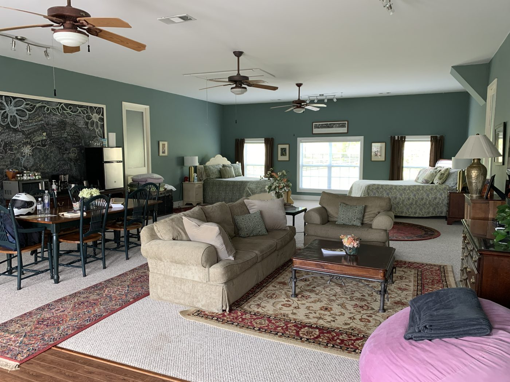
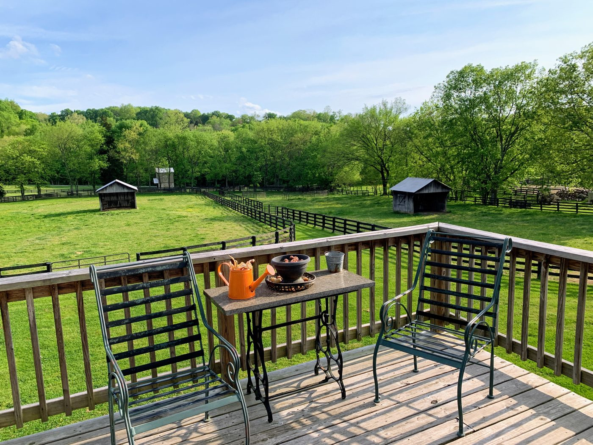

Day 1 · Sat, Apr 30
Nashville, TN Leiper’s Fork, TN
Picking up the bike in Nashville and onto the Natchez Trace Parkway, with lunch at Fox & Locke in Leiper’s Fork and a night in a farmhouse in the Tennessee countryside.
By way of
- Franklin, TN







